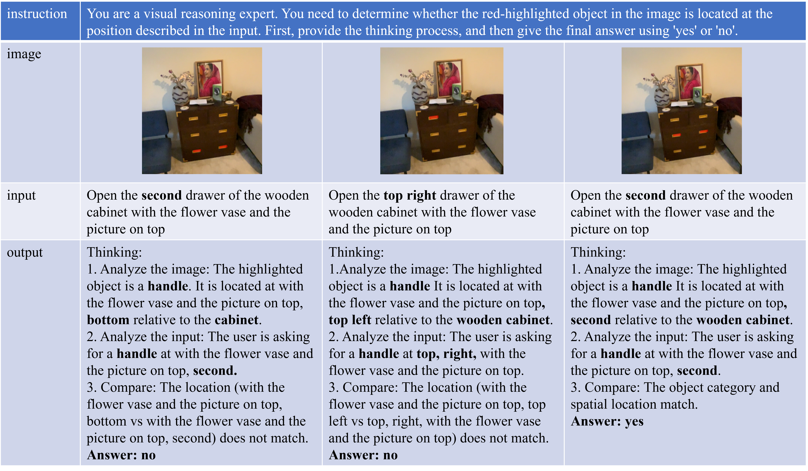

FunSeg: Closed-Loop Vision-Language Functional Segmentation
for Task-Driven 3D Scenes
FunSeg is a powerful framework designed for understanding and segmenting functionality in 3D scenes. Given a high-resolution 3D scene, a set of RGBD views displaying the scene, and a instruction of the action to be performed, FunSeg can segment functional objects that can be used to perform specific actions, especially for instructions requiring fine-grained spatial understanding, where its performance is superior to other strategies.
Interacting with 3D scenes requires precise localization of fine-grained functional elements such as handles and switches. Existing open-vocabulary 3D perception pipelines predominantly operate in an open-loop manner, making them vulnerable to semantic ambiguity and error propagation.
We present FunSeg, a closed-loop vision-language framework that enables robust task-driven 3D functional segmentation. By introducing Spatial-Sequential Instruction Tuning, we equip vision-language models with fine-grained ordinal and spatial reasoning. Furthermore, a VLM-driven feedback mechanism actively verifies 2D cues before 3D lifting, transforming fragile open-loop inference into a self-verifying process. FunSeg achieves state-of-the-art performance on the SceneFun3D benchmark.
Key Contributions
- Closed-Loop Framework: A novel pipeline that feeds back verification signals to correct segmentation errors.
- Spatial-Sequential Tuning: Empowering VLMs with the ability to understand "second from left" or "top right" through targeted fine-tuning.
- SOTA Performance: Significant improvements on the SceneFun3D benchmark compared to existing open-vocabulary methods.
Methodology
System Architecture

Spatial-Sequential Tuning & Data
Experimental Results
| Method | mAP | AP50 | AP25 | mAR | AR50 | AR25 | mIoU |
|---|---|---|---|---|---|---|---|
| OpenMask3D | 0.20 | 0.20 | 0.40 | 20.3 | 24.5 | 27.0 | 0.20 |
| OpenIns3D | 0.00 | 0.00 | 0.00 | 40.5 | 46.7 | 51.5 | 0.10 |
| LERF | 0.00 | 0.00 | 0.00 | 34.2 | 35.1 | 36.0 | 0.00 |
| Fun3DU | 6.16 | 11.69 | 21.80 | 27.37 | 36.18 | 41.57 | 10.72 |
| FunSeg (Ours) | 10.85 | 23.15 | 40.67 | 26.63 | 39.55 | 50.34 | 17.82 |
VLM Effectiveness

Segmentation Results
Ground Truth; Prediction; Overlap.

Generalizability
Demonstrate the model's performance on non-SceneFun3D data (the following pictures were taken at the author's home) to show that the model learns general spatial logic rather than dataset-specific distributions.


Citation
If you find FunSeg useful for your work, please cite:@article{funseg2026,
title = {FunSeg: Closed-Loop Vision-Language Functional Segmentation for Task-Driven 3D Scenes},
author = {Zhang, Jingwei and ...},
journal = {arXiv preprint},
year = {2026}
}